无标题
卷积
从数学上讲，卷积就是一种运算。
某种运算，能被定义出来，至少有以下特征：
- 首先是抽象的、符号化的
- 其次，在生活、科研中，有着广泛的作用
比如加法：
- a+b ，是抽象的，本身只是一个数学符号
- 在现实中，有非常多的意义，比如增加、合成、旋转等等
卷积，是我们学习高等数学之后，新接触的一种运算，因为涉及到积分、级数，所以看起来觉得很复杂。
1 卷积的定义
我们称 (f∗g)(n) 为 f,g 的卷积
其连续的定义为：
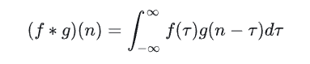
其离散的定义为：
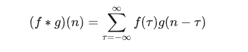
这两个式子有一个共同的特征：
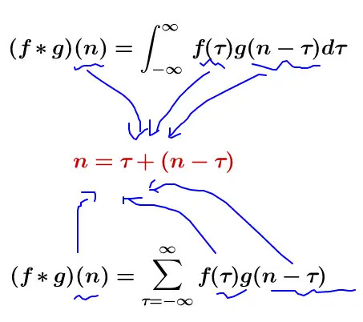
这个特征有什么意义？
我们令 x=τ,y=n−τ ，那么 x+y=n 就是下面这些直线：
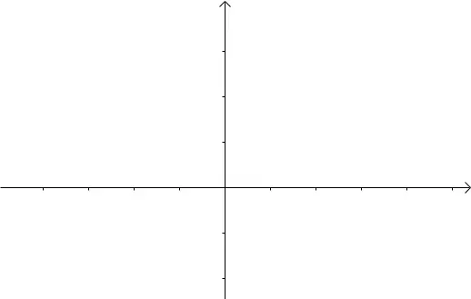
如果遍历这些直线，就好比，把毛巾沿着角卷起来：
此处受到 荆哲：卷积为什么叫「卷」积？ 答案的启发。
只看数学符号，卷积是抽象的，不好理解的，但是，我们可以通过现实中的意义，来习惯卷积这种运算，正如我们小学的时候，学习加减乘除需要各种苹果、糖果来帮助我们习惯一样。
我们来看看现实中，这样的定义有什么意义。
2 离散卷积的例子：丢骰子
我有两枚骰子：
把这两枚骰子都抛出去：
求：
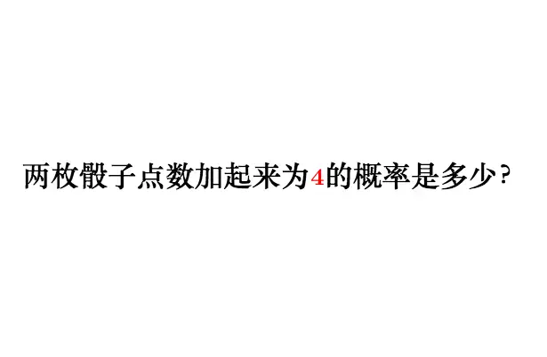
这里问题的关键是，两个骰子加起来要等于4，这正是卷积的应用场景。
我们把骰子各个点数出现的概率表示出来：
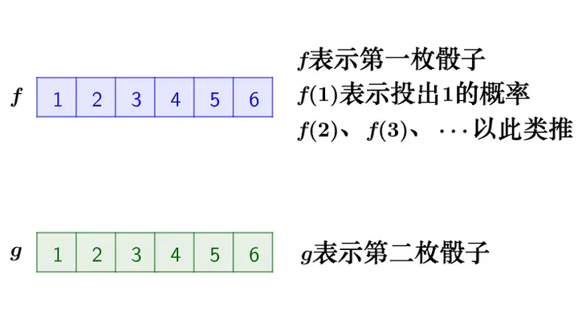
那么，两枚骰子点数加起来为4的情况有：
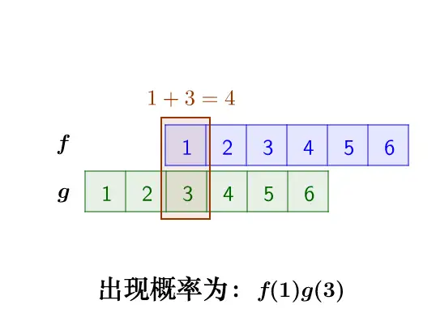
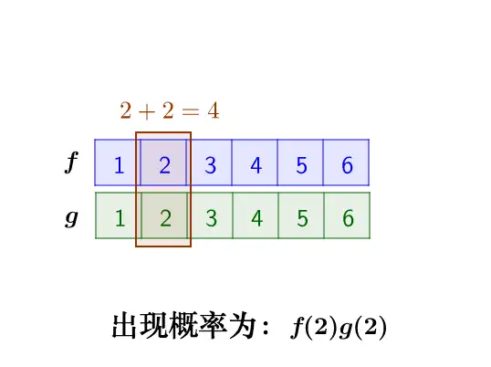
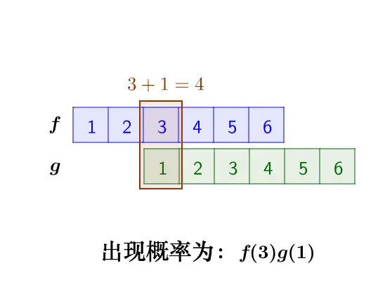
因此，两枚骰子点数加起来为4的概率为：
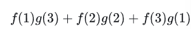
符合卷积的定义，把它写成标准的形式就是：
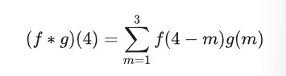
3 连续卷积的例子：做馒头
楼下早点铺子生意太好了，供不应求，就买了一台机器，不断的生产馒头。
假设馒头的生产速度是 f(t) ，那么一天后生产出来的馒头总量为：
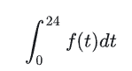
馒头生产出来之后，就会慢慢腐败，假设腐败函数为 g(t) ，比如，10个馒头，24小时会腐败：
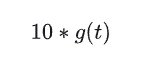
想想就知道，第一个小时生产出来的馒头，一天后会经历24小时的腐败，第二个小时生产出来的馒头，一天后会经历23小时的腐败。
如此，我们可以知道，一天后，馒头总共腐败了：
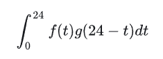
这就是连续的卷积。
4 图像处理
4.1 原理
有这么一副图像，可以看到，图像上有很多噪点：
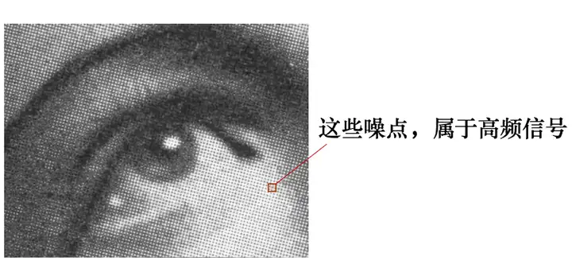
高频信号，就好像平地耸立的山峰：
看起来很显眼。
平滑这座山峰的办法之一就是，把山峰刨掉一些土，填到山峰周围去。用数学的话来说，就是把山峰周围的高度平均一下。
平滑后得到：
4.2 计算
卷积可以帮助实现这个平滑算法。
有噪点的原图，可以把它转为一个矩阵：
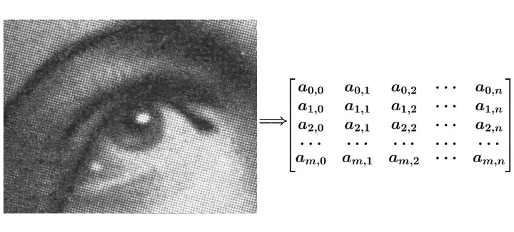
然后用下面这个平均矩阵（说明下，原图的处理实际上用的是正态分布矩阵，这里为了简单，就用了算术平均矩阵）来平滑图像：
g=[191919191919191919]
记得刚才说过的算法，把高频信号与周围的数值平均一下就可以平滑山峰。
比如我要平滑 a1,1 点，就在矩阵中，取出 a1,1 点附近的点组成矩阵 f ，和 g 进行卷积计算后，再填回去：
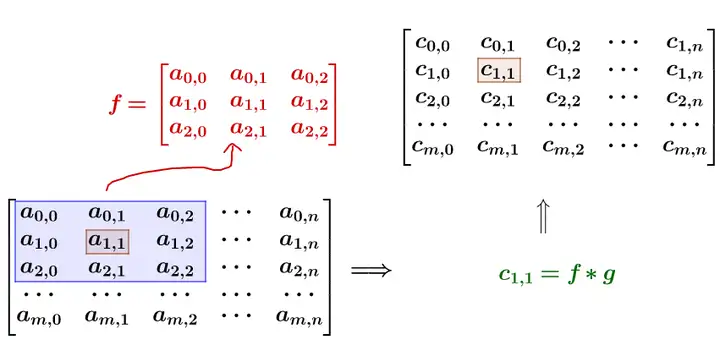
要注意一点，为了运用卷积， g 虽然和 f 同维度，但下标有点不一样：
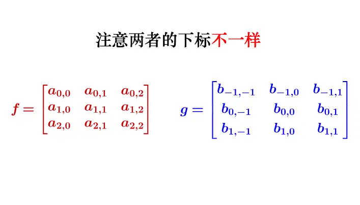
我用一个动图来说明下计算过程：
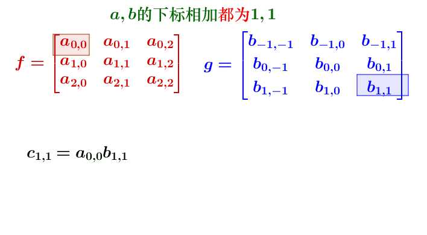
写成卷积公式就是：
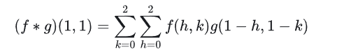
要求 c~4,5~ ，一样可以套用上面的卷积公式。
这样相当于实现了 g 这个矩阵在原来图像上的划动（准确来说，下面这幅图把 g 矩阵旋转了 180° ）：
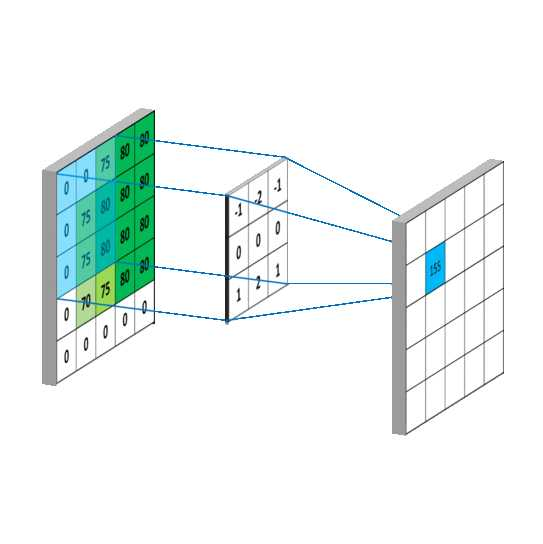
此图出处：Convolutional Neural Networks - Basics
文章最新版本在（有可能会有后续更新）：如何通俗地理解卷积？